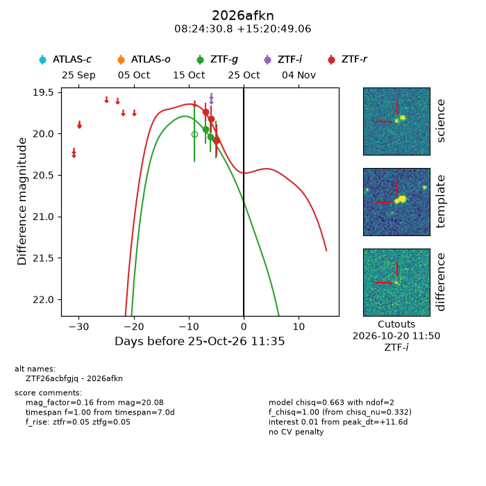
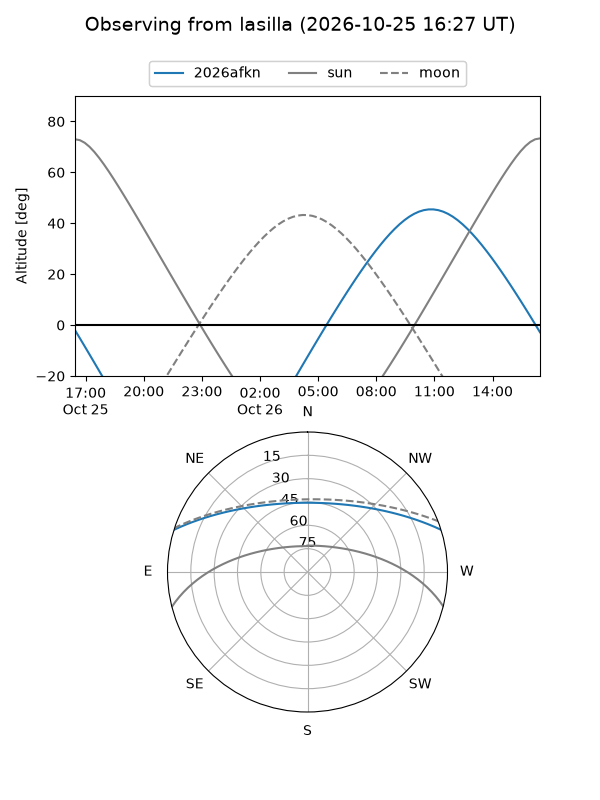
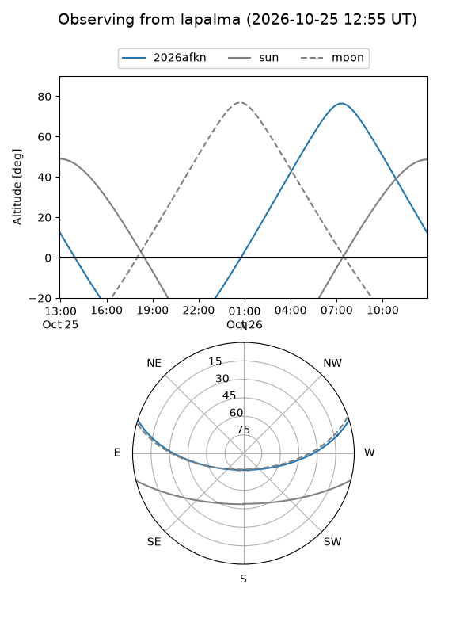
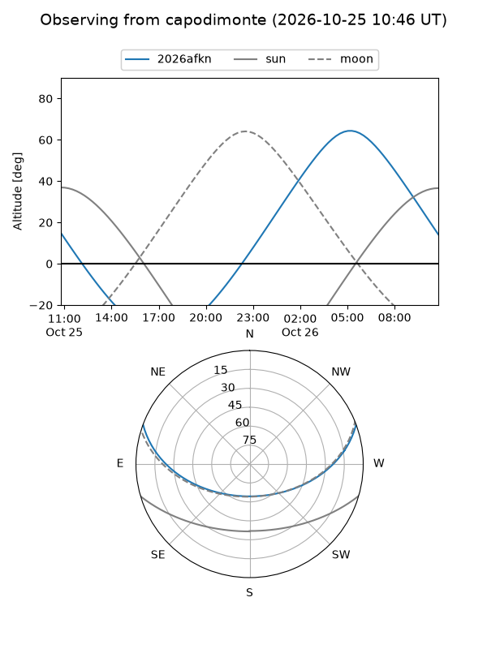
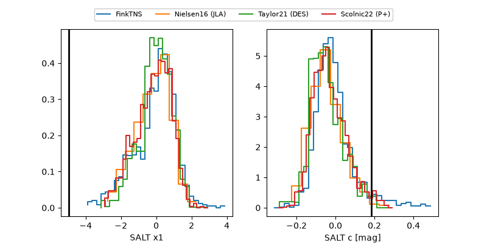

2026afkn
Target 2026afkn at 2026-10-25 11:36
Aliases and brokers:
FINK-ZTF: ztf.fink-portal.org/ZTF26acbfgjq
Lasair-ZTF: lasair-ztf.lsst.ac.uk/objects/ZTF26acbfgjq
ALeRCE-ZTF: alerce.online/object/ZTF26acbfgjq
YSE-PZ: ziggy.ucolick.org/yse/transient_detail/2026afkn
TNS name: wis-tns.org/object/2026afkn
Direct TNS query: direct search
alt names
ZTF26acbfgjq (ztf,fink_ztf)
2026afkn (tns,yse)
Coordinates:
equatorial (ra, dec) = 126.1285,+15.34696
equatorial (HMS+DMS) = 08:24:30.85,+15:20:49.06
galactic (l, b) = (208.9392,+27.36995)
Flags:
peak dt: +11.6
Photometry:
last ztfg=20.04, ztfr=20.08
2 ztfg, 3 ztfr detections
Lightcurve

Visibility



Additional plots
